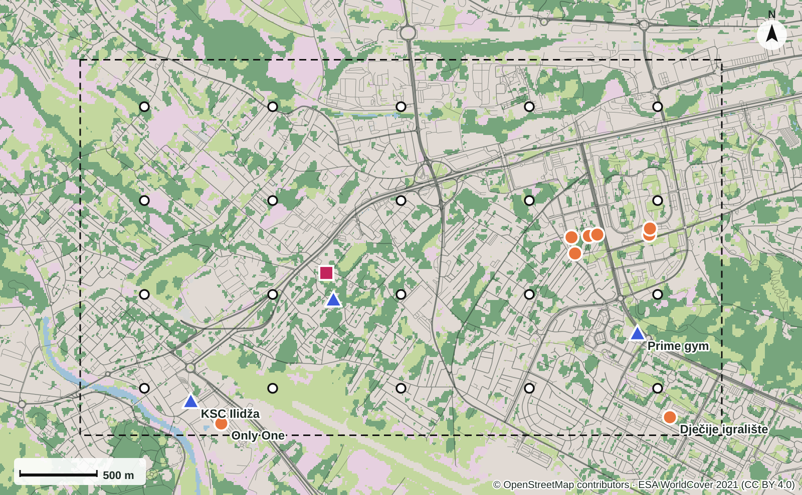
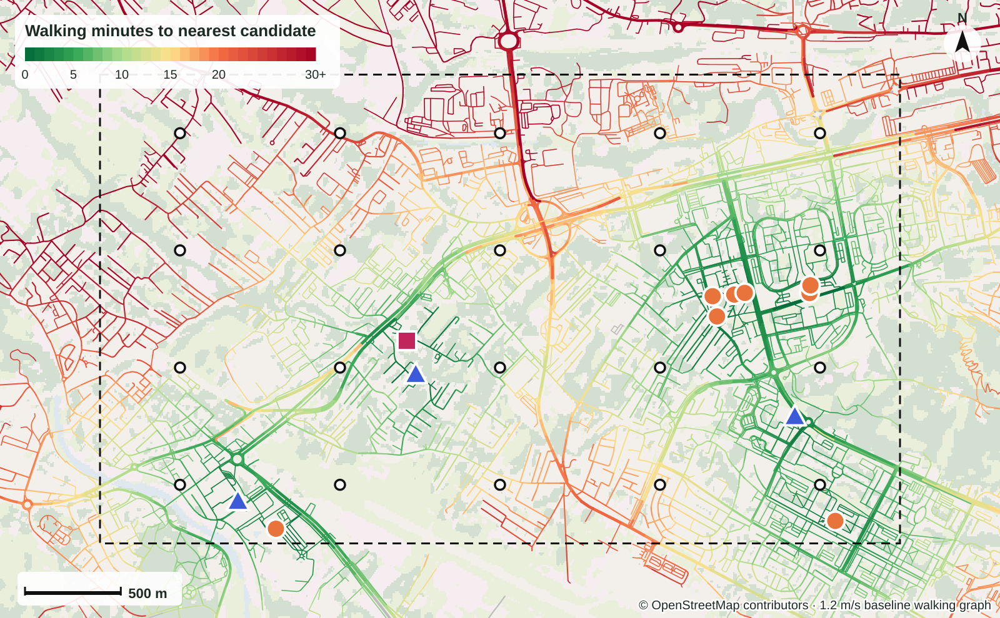
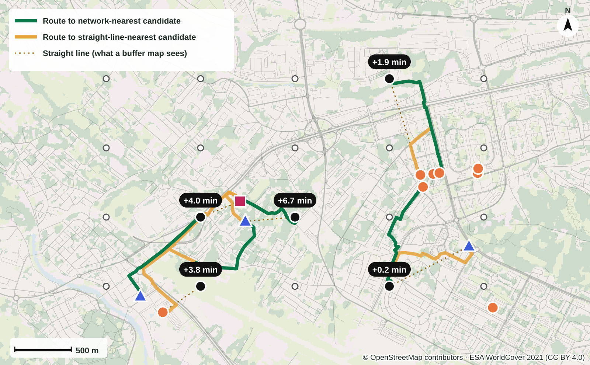
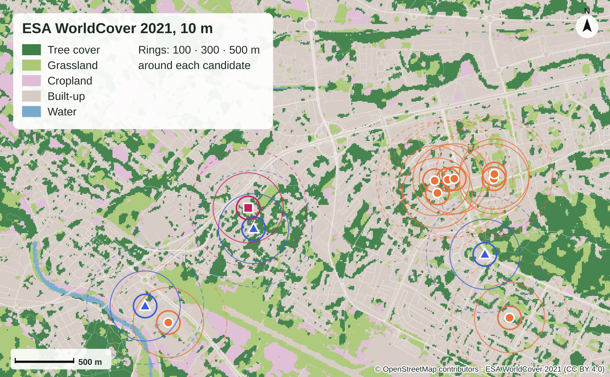
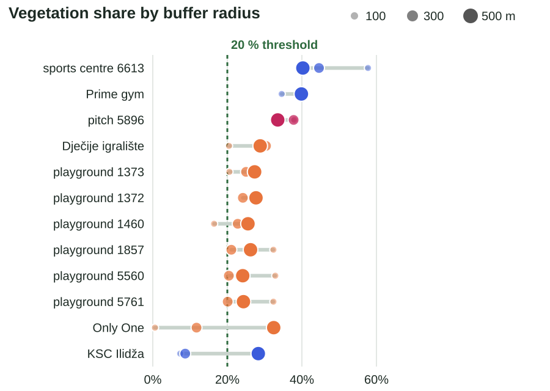
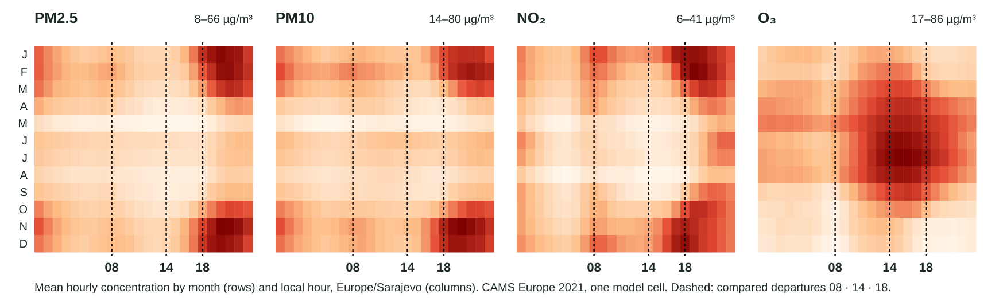

ICSIE 2026 · Full paper presentation
SportSpace: Spatial Evidence for Planning Active Urban Environments in Ilidža–Stup
Semir Poturak · Amra Tuzović
University of Travnik, Faculty of Technical Sciences
Interactive pilot & paper: 3esign.github.io/sportspace-pilot
A map symbol is not an opportunity

Question, contribution and position
How can modelled access, green context and historical environmental conditions be translated into transparent planning questions for sport and recreation, without treating them as verified participation or health outcomes?
Proximity
Straight-line vs. network distance, per activity category
Green scale
Sensitivity of travel-time / vegetation trade-offs to buffer radius
Timing
Pollutant-specific comparison of historical departure times
| Strand | Taken from it | Not claimed |
|---|---|---|
| Health-oriented planning (WHO 2016–2020) | Motivation to examine activity-supporting environments | Conversion from minutes or vegetation % to health effect |
| Accessibility measures (Geurs & van Wee 2004) | Nearest, cumulative, decay-weighted as complementary | Calibrated local preferences |
| Pollution-aware routing (Yan 2024) · Green & air (Venter 2024) · Vis design (Munzner 2009) | Trade-offs in travel; vegetation separate from air; interface as instrument | Street-level routing; vegetation as pollution reducer; proof the interface improves decisions |
Contribution: an applied, reproducible workflow connecting each indicator to a decision and to the evidence required before acting on it.
Study design and data: Ilidža–Stup pilot
Method: three measures, one trade-off, one integral
Accessibility
Nearest destination: straight-line vs. network
Cumulative: Ni(τ) = Σj 1[tij ≤ τ], τ = 10 / 20 / 30 min
Potential: Pi(h) = Σj 2−tij/h, h = 10 / 15 / 30 min
Green trade-off
Vj(r): vegetation % at r = 100 / 300 / 500 m
Joint count with threshold g = 10 / 20 / 30 %
Pareto set: minimise tij, maximise Vj(r)
1,620 parameter rows; 57 radius comparisons per activity
Outing scenarios
Departures 08:00 / 14:00 / 18:00, every 2021 date; stay 30 min (15, 60)
Ep = ∫0T Cp(s+u) du, T = 2t + d
83,220 paired cases per pollutant; not inhaled dose
Equal destination weights. Thresholds are analytical scenarios, not health or planning standards.
The screening scenario in space

Finding 1 · Network proximity changes the nearest destination

Finding 2 · The scale of green context changes the compromise set


Finding 3 · Departure-time comparisons differ between pollutants

µg·min/m³, 83,220 paired date–route scenarios per pollutant, 30-min stay. One regional 2021 series: retrospective, not a recommendation for today or a cleaner street.
Finding 4 · The representation itself is part of the result
Directionality
Removing graph direction rules shortens 125 / 228 routed pairs, max 11.45 min. Sports-centre disagreement drops 3/19 → 2/19; playground set unchanged.
Candidate identity
Grouping the two unresolved close playground pairs changes opportunity counts in 15 / 57 origin–threshold cases (by at most two).
Connectors
Origin + destination connectors: median 2.13 %, max 13.94 % of baseline distance. All 20 origins satisfy 350 m snapping; 17 pass at 50 m, 19 at 100 m.
Independent rerouting reproduces all baseline distances. A record count should not be presented as an inventory of independent venues.
Controls and reproducibility
- 4,380 nested-interval monotonicity checks: no violations
- 80 origin–activity records and 1,620 rows verified; independent PM2.5 integration
- 10 core outputs regenerated twice offline, SHA-256 identical
- Node.js standard library only, no npm dependencies
- Station audit: official Ilidža displays exist, no matched authorised archive → no validation claim
- Versioned analytical supplement with scripts, outputs, figures and manifests
Computational reproducibility, interpretive plausibility and real-world validity are three separate things. Tests and hashes establish only the first.
From indicator to planning question
| Indicator | Concrete question | Permissible preliminary use | Does not establish |
|---|---|---|---|
| Network vs. straight-line; directional & connector sensitivity | Is the detour due to the city or the representation? | Review connections, crossings, entrances in records | A missing crossing or a justified construction project |
| Opportunity counts; unresolved grouping | How many distinct candidates remain? | Shortlist for documentary review (incl. physical education) | Capacity, suitability, permission, demand |
| Vegetation share; radius-dependent Pareto | Immediate setting or wider neighbourhood? | Examine spatial context of alternatives | Shade, usable green area, design quality |
| Pollutant-specific integrals; meteorology | Does the timing comparison change between pollutants? | Argue for temporal, pollutant-specific context | A safe time today or a cleaner route |
| Access documentation gaps | Which missing fact could invalidate the shortlist? | Assign a focused verification task | Access merely because an object is mapped |
Example: the 9.98-minute sports-centre detour first suggests inspecting a missing link. The directionality audit shows the comparison changes with graph assumptions, so the first action is to inspect the representation, not to propose a physical connection.
Sport, physical education and health
Urban planning
Distribution and connection of potential activity settings
Urban design
Quality and continuity of route and place
Sport & PE practice
Can a specific activity be organised here for a specific group?
SportSpace supplies preliminary spatial information to this shared problem: which candidates to check, which cost more travel in the model, which details matter before organising activity.
Equipment, group size, supervision, surface, toilets, opening hours and permissions remain outside the analysed data. Health is upstream and conditional: opportunity ≠ participation ≠ benefit. The model cannot balance exercise benefit against pollution risk.
Limits and what comes next
Limits
- Synthetic origins: no population, schools, deprivation or demand
- 2026 network vs. 2021 environment: a mixed-year scenario
- Regional air and meteorology cannot differentiate nearby paths
- Pedestrian semantics, topology and connectors not field-verified
- Candidate identities and access incompletely verified
- No participants, activity minutes or health outcomes observed
Next, within the existing-data boundary
- Check pedestrian semantics and graph topology against source records
- Resolve close candidate identities; obtain documented venue properties
- Match authorised station archives if available
- Independently designed evaluation of decision usefulness
No CFD, new field campaigns or clinical research required for this contribution.
Conclusion
Network representation, the scale of vegetation context and the time of an assumed outing can each alter comparisons among mapped recreation candidates. Directionality and unresolved candidate identity do too.
The method organises the examination of access, setting and timing for sport and recreation, including the initial review of candidate settings for physical education. It cannot establish venue suitability, participation, equitable provision or health effects.
Defensible contribution: making the link from an indicator to a planning question and the next necessary evidence explicit, before a map-based result becomes a design or programme decision.
Thank you
Semir Poturak · Amra Tuzović · University of Travnik, Faculty of Technical Sciences
3esign.github.io/sportspace-pilot
Data: OpenStreetMap © contributors · ESA WorldCover 2021 (modified Copernicus Sentinel data) · CAMS and ERA5 via Open-Meteo · FHMZ BiH